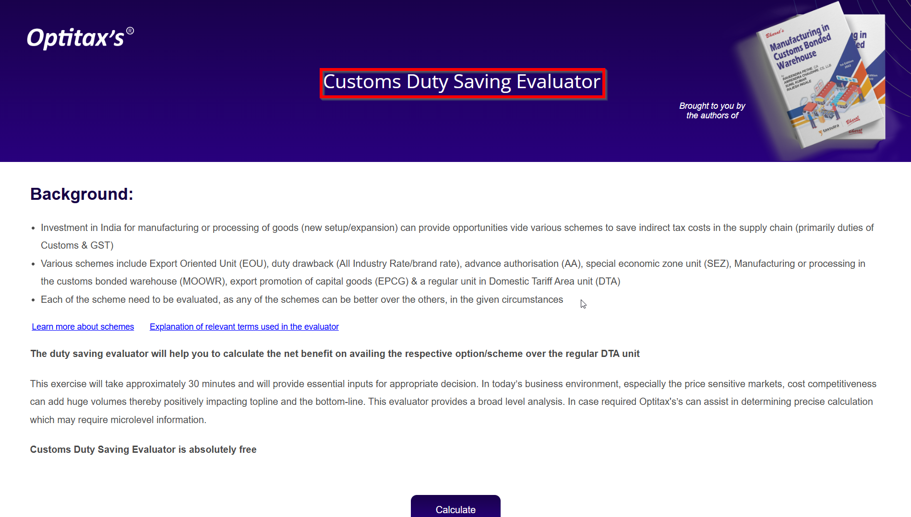
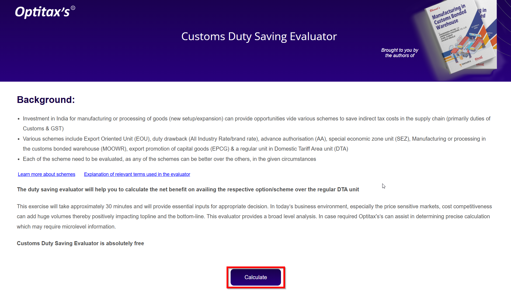
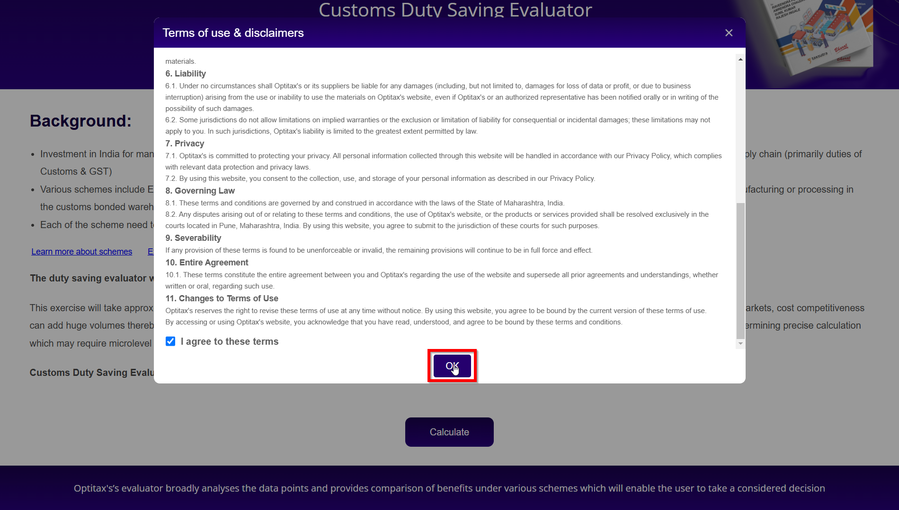
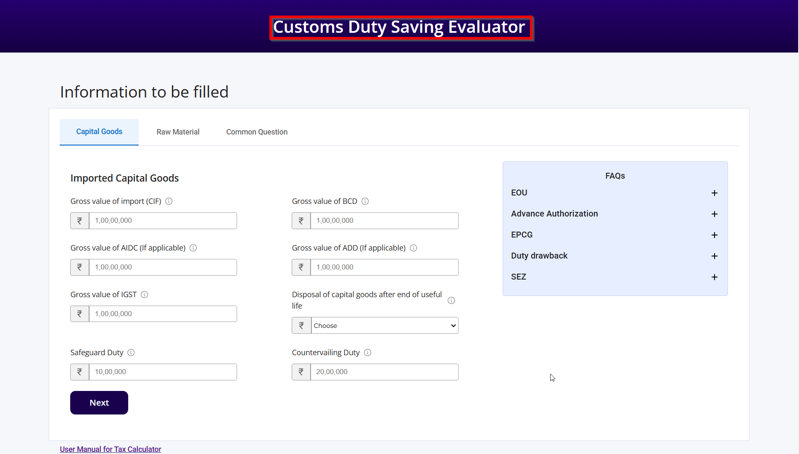
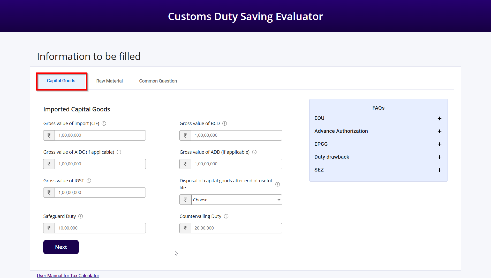
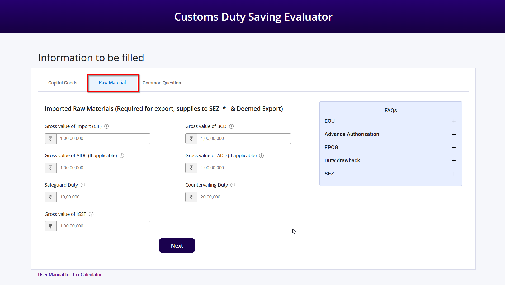
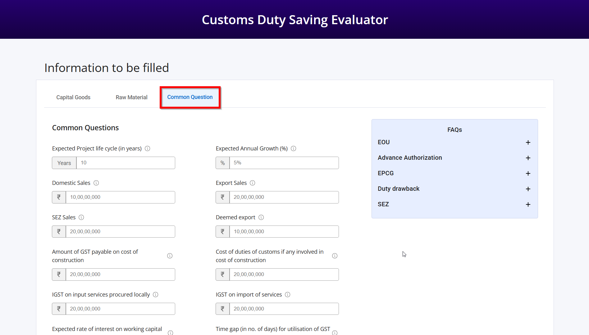
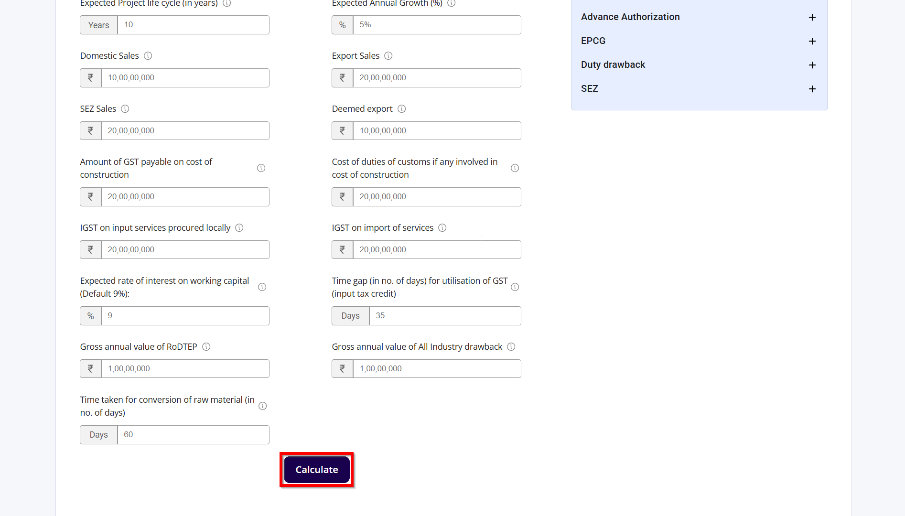

1) introduction: Customs Duty Saving Evaluator
1.1) This section provides a detailed overview of the Customs Duty Saving Evaluator, explaining its features, functionalities, and how to effectively use the calculator to estimate potential savings on customs duties.
1.2) Click on the "Calculate" button.
1.3) Before proceeding, please ensure that you have thoroughly read and accepted the terms & conditions. This step is crucial to ensure that you are aware of the guidelines and legalities associated with using the Customs Duty Saving Evaluator.
2) introduction to Main Evaluator Page
2.1) The Main Evaluator Page is the core of the Customs Duty Saving Evaluator. Here, you will need to fill in all the necessary information regarding your imports. This includes details such as the type of goods, their value and any other relevant data. The accuracy of the information you provide is crucial as it directly impacts the calculation of potential customs duty savings. Make sure to double-check all entries before proceeding to ensure the most accurate evaluation.
2.2) This is the first tab where you need to fill in all the Capital Goods Information such as ADD (Anti-Dumping Duty), AIDC (Agriculture Infrastructure and Development Cess), SWS (Social Welfare Surcharge), IGST (Integrated Goods and Services Tax), CVD (Countervailing Duty), BCD (Basic Customs Duty), etc. Each of these fields must be accurately completed to ensure the correct calculation of potential customs duty savings. Detailed descriptions and examples for each type of duty are provided below to assist you in filling out the form correctly.
2.3) The second tab requires you to provide detailed information about the Raw Materials. Similar to the Capital Goods Information, you need to fill in fields such as ADD (Anti-Dumping Duty), AIDC (Agriculture Infrastructure and Development Cess), SWS (Social Welfare Surcharge), IGST (Integrated Goods and Services Tax), CVD (Countervailing Duty), BCD (Basic Customs Duty), etc. Accurate completion of these fields is essential for the precise calculation of potential customs duty savings. Detailed descriptions and examples for each type of duty are provided below to assist you in filling out the form correctly.
2.4) The final tab requires you to provide answers to some common questions related to your export sales, time gap between imports and exports, growth rate, and other relevant factors. This information is crucial for a comprehensive evaluation of your potential customs duty savings. Ensure that you provide accurate and detailed responses to each question to facilitate an accurate assessment. Detailed guidelines and examples are provided below to assist you in completing this section correctly.
3) Calculate & Download Report
3.1) Once you have filled in all the necessary information in the previous tabs, click on the "Calculate" button to initiate the evaluation process. The system will process the data you have provided and compute the potential customs duty savings based on the current regulations and duty rates. This step is crucial as it provides you with an estimate of the savings you can achieve by using the Customs Duty Saving Evaluator.
3.2) After the calculation is complete, you will have the option to download a detailed report summarizing the potential customs duty savings. This report will include all the relevant data and calculations, providing you with a comprehensive overview of your potential savings. Additionally, we encourage you to fill out the feedback form to help us improve our services. Your feedback is valuable and will assist us in enhancing the functionality and user experience of the Customs Duty Saving Evaluator.